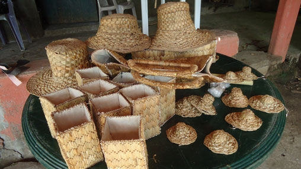
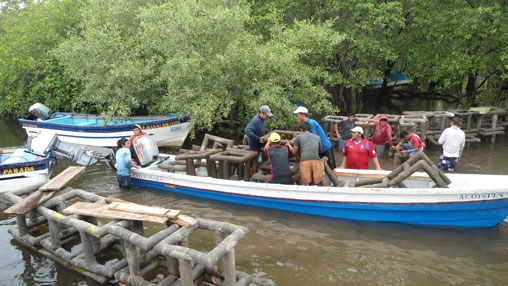

Con la asistencia del Fondo para el Medio Ambiente Mundial (FMAM), el proyecto actualizó la estrategia y el plan de acción nacional para consolidar y gestionar el Sistema de Áreas Naturales Protegidas y los puso a prueba en dos áreas piloto protegidas. El proyecto impidió la deforestación y promovió la regeneración en más de 20.207 hectáreas. Se delinearon las áreas protegidas de ambos programas y se redujeron los conflictos por tenencia de la tierra. Las inversiones en capacitación y en modos de subsistencia alternativos beneficiaron a los grupos solidarios y a las cooperativas locales, y fortalecieron su apoyo a la conservación de la biodiversidad.
En el año 2005, la mayor parte de las tierras comprendidas en el Sistema de Áreas Naturales Protegidas eran sólo áreas de conservación “en papel”, sin un marco jurídico ni una protección física adecuados, ni existían zonas de amortiguación. Solo una fracción de ellas estaba declarada y demarcada jurídicamente. La estructura institucional que las regía era confusa y, aunque el Ministerio de Medio Ambiente y Recursos Naturales (MARN) era responsable de todo el sistema, solo era propietario legal de 7.070 hectáreas. Se desconocía la calidad y el tipo de bienes y servicios ambientales y recursos de biodiversidad, así como la cantidad de asentamientos humanos, lo que dificultaba su gestión y el establecimiento de prioridades.
Era esencial refinar la estrategia del Sistema de Áreas Naturales Protegidas, definir prioridades y lograr un mayor consenso entre las partes interesadas acerca de la estrategia y la conservación. El MARN carecía de las herramientas jurídicas necesarias para gestionar y consolidar el sistema, resolver la delicada cuestión de los asentamientos humanos, clarificar la tenencia de la tierra y resolver problemas de invasión de tierras estatales desocupadas.
Se precisaba de una metodología para identificar los asentamientos legales e ilegales en áreas protegidas y regularizar a los últimos. Las graves limitaciones de recursos que sufría el MARN amenazaban su capacidad de consolidar el mencionado sistema.
Los dos flujos principales de actividades del proyecto eran interdependientes; la idea era que la delimitación, la demarcación, la ejecución de planes de gestión y la regularización de los residentes de los parques contribuirían a la formulación de metas e instrumentos innovadores en materia jurídica, estratégica y de políticas esenciales para la sostenibilidad a largo plazo del Sistema de Áreas Naturales Protegidas.
El proyecto debía combinarse parcialmente con la segunda etapa del proyecto de ordenación de la tierra, respaldado por el Banco Mundial, cuya recopilación masiva de datos relacionados con la tierra constituiría una base para la conservación a gran escala, que incluiría la consolidación de áreas protegidas, y la formulación de una estrategia para resolver la situación de los asentamientos irregulares que existían en esas áreas.
Además, el proyecto era sumamente innovador en tanto procuraba demostrar que era viable que los residentes de las áreas protegidas siguieran viviendo productivamente en zonas sujetas a normas de conservación y restricción ambiental y, al mismo tiempo, asumieran una participación directa en la conservación.
El Proyecto de Consolidación y Administración de Áreas Protegidas ayudó a conservar la biodiversidad de El Salvador, muy importante a nivel mundial, fortaleciendo el Sistema de Áreas Naturales Protegidas y poniendo a prueba una estrategia de gestión en dos áreas piloto protegidas hasta alcanzar los siguientes resultados:En 2012 finalizó una estrategia y un plan de acción actualizados con insumos y experiencias generados por el proyecto tales como el estudio sobre racionalización y priorización de áreas protegidas completado en 2011, los planes de gestión que derivaron en 24 inversiones de demostración en modos de subsistencia alternativos en las áreas piloto protegidas, que beneficiaron a más de 2.700 habitantes pobres de la zona, y la regularización de las actividades de campo.
" Nos capacitaron para usar métodos de pesca mejores y más seguros, que aumentaron la producción y permitieron que se regeneraran los peces "
El costo efectivo total del proyecto era de US$4,9 millones, conformados por financiamiento del FMAM por US$4 millones y por un aporte del Gobierno por US$900.000. De este monto, alrededor del 28% se esperaba evaluaren el marco de la operación combinada con el segundo Proyecto de Administración de Tierras; y aproximadamente el 36% del monto de contrapartida, luego de la cancelación del segundo Proyecto de Administración de Tierras. La reducción de costos se debió: i) a la sobreestimación de áreas en las que debían realizarse actividades de regularización de campo; ii) al hecho de que ciertas actividades no se completaron; los subcomponentes 1.2 (marco jurídico e institucional) y 1.3 (campaña de difusión y sensibilización pública) costaron solo una fracción de lo previsto (el 11,3% y el 8%, respectivamente) por falta de ejecución, y iii) a la falta de tiempo y de aprobación por parte del Banco Mundial de una segunda prórroga del plazo para completar las actividades. Los costos del componente 2 fueron alrededor de un 17% más altos que lo esperado, y los costos administrativos, un 28% más bajos.
El proyecto fue una alianza con el Gobierno de El Salvador por medio del Ministerio de Medio Ambiente y Recursos Naturales. La colaboración formal planificada de otros organismos gubernamentales fue limitada una vez que se canceló el segundo Proyecto de Administración de Tierras, pero en el último año se establecieron foros técnicos y de otra índole con experimentados organismos del sector, como el Centro Nacional de Registros y el Instituto Salvadoreño de Transformación Agraria. Además, el Ministerio de Medio Ambiente dio pasos importantes para estrechar los lazos de trabajo con los Ministerios de Agricultura, de Turismo y de Pesca a fin de ampliar los cimientos políticos y técnicos del Sistema de Áreas Naturales Protegidas.
No hay ninguna operación de seguimiento ni ampliación planificada para el futuro inmediato, dadas las prioridades actuales del Gobierno y la estrategia de alianza con el país 2010-14. Sin embargo, El Salvador está adoptando cada vez más la agenda mundial sobre el cambio climático, especialmente en mitigación y adaptación a sus efectos. Esto incluye la participación en el Fondo Cooperativo para el Carbono de los Bosques, del Banco Mundial, que ayudará al país a desarrollar una estrategia para gestionar y vigilar sus recursos forestales y a prepararse para realizar transacciones de carbono forestal, para lo cual los logros de este proyecto tienen una relevancia directa. Además, el Ministerio del Medio Ambiente y Recursos Naturales está procurando obtener financiamiento del Fondo de las Naciones Unidas para reducir las emisiones producidas por la deforestación y la degradación forestal en los países en desarrollo, a fin de instaurar un programa para restaurar los ecosistemas y los paisajes de Bahía de Jiquilisco.
El conjunto de beneficiarios del proyecto se definió de manera amplia e inclusiva, y se identificó mediante una evaluación social participativa, pero no se establecieron beneficiarios específicos ni se los desglosó por género. En San Diego-Las Barras, el crecimiento excesivo de nenúfares en la laguna de Metapán estaba afectando la subsistencia de algunos grupos de habitantes, pues interfería con la navegación, el turismo y la pesca. En el marco del proyecto, se les enseñó cómo extraer los nenúfares para reducir su densidad, promover un hábitat y un tránsito de embarcaciones normales, y utilizar los nenúfares como material para hacer artesanías y fertilizantes.
José Mauricio de Paz, presidente de la Asociación Cooperativa de Producción Pesquera, Isla de Méndez (Bahia de Jiquilisco):
“Cuando terminó el conflicto armado en El Salvador, muchos pescadores —unos 120 solo en nuestra zona— empezaron a usar explosivos como una manera fácil de pescar, pero eso mataba todo y, con el tiempo, los peces desaparecieron. Presentamos quejas a las autoridades pero no dieron resultado. Al final, la Fuerza Naval nos recomendó que nos pusiéramos en contacto con el Ministerio de Ambiente, que nos ofreció oportunidades en el marco del proyecto. Nos capacitaron para usar métodos de pesca mejores y más seguros, que aumentaron la producción y permitieron que se regeneraran los peces”.